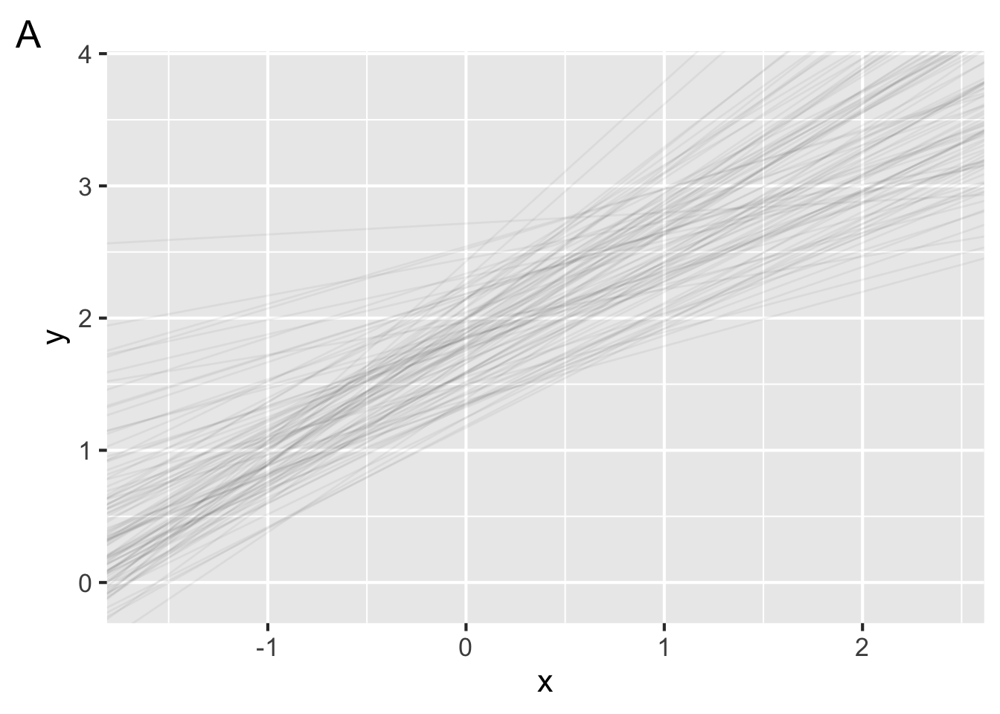
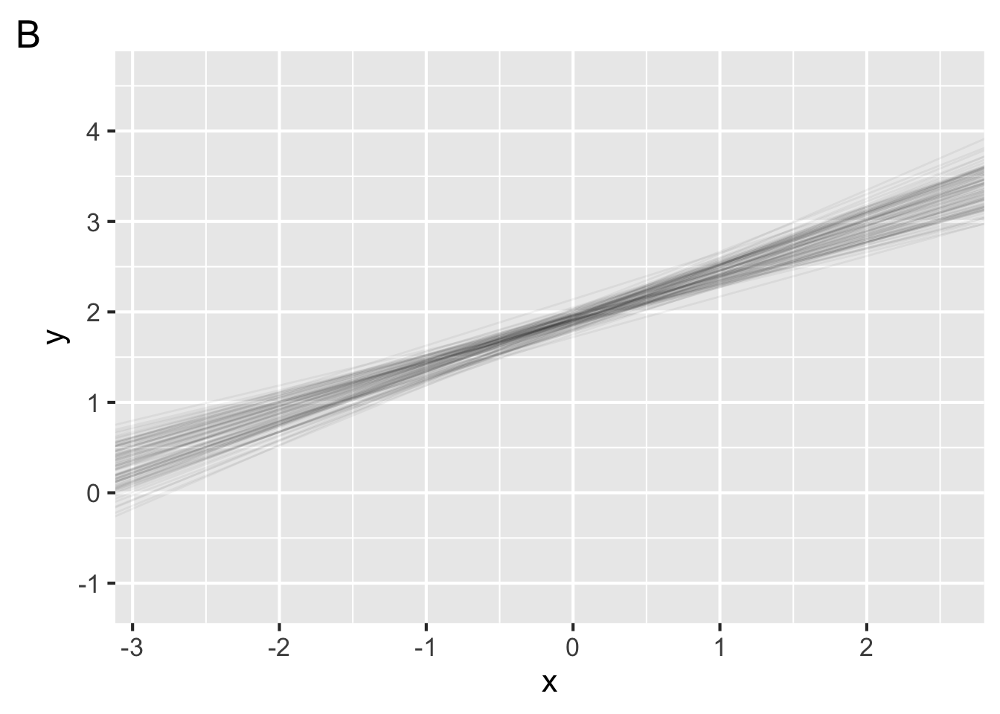
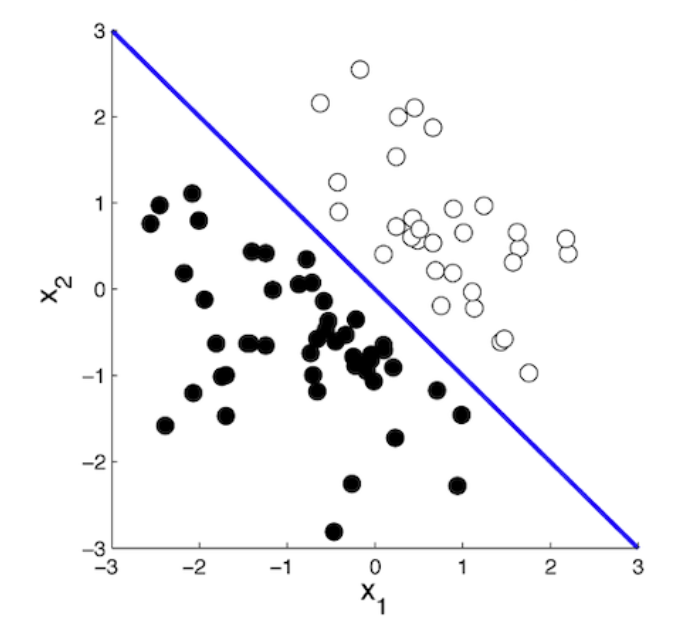
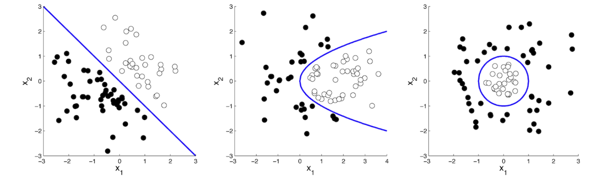

answer
"Because we are interested in the model parameters that
best describe the population from which the sample was
drawn. Due to sampling error, we can expect some
variability in the model parameters."Not graded, just practice


"Because we are interested in the model parameters that
best describe the population from which the sample was
drawn. Due to sampling error, we can expect some
variability in the model parameters.""Regression predicts a continuous response varaible,
classification predicts a discrete response variable"

"Any 2 of those mentioned in class:
Logistic regression
Linear discriminant analysis (LDA)
Linear support vector machines (SVM)
Nearest-prototype classifiers
Naive Bayes classifiers
"We can impliment classification via
True or false, in R, we can perform logistic regression with a generalized linear model.
"1. A particular distribution for modeling the response variable
2. A linear model
3. A link function
"# code A
glm(y ~ x, data = data, family = "binomial")
# code B
data %>%
specify(y ~ x) %>%
fit()
# code C
logistic_reg %>%
set_engine("glm") %>%
fit(y ~ x, data = data)